Samsung Knox Deployment App
Last updated July 26th, 2023
The Knox Deployment App is a mobile application available from the Google Play Store that is uniquely designed to help streamline the enterprise deployment of Samsung phones and tablets running Knox 2.8 or higher. The Knox Deployment App enables customers to seamlessly enroll devices using Knox mobility solutions.
About
The Knox Deployment App provides the flexible option to IT admins needing to bulk enroll end-user devices without having a reseller. Using this app allows IT Admins to reduce their bulk deployment time, by using a master device without factory resetting each device. Once enrolled, an IT admin can easily locate the devices within Knox Guard.
Bluetooth enrollment
To support Bluetooth-based enrollment, an IT admin can install the KDA on a dedicated admin/master smartphone or tablet device. If the user’s device is within proximity of the master device, the user device connects to the admin device via Bluetooth without a PIN or password requirement.
NFC enrollment
With Near Field Communication (NFC) enrollments, a non-B2B device is “bumped” (held closely together) with another smartphone device with Knox Deployment App running and scanning in NFC mode. The dedicated master NFC device displays profiles available for enrollment and end user device enrollment begins once an IT admin selects a profile. The NFC enrollment option is not available to tablet devices. Using the Knox Deployment App does not apply the profile to the admin/master device. It only broadcasts the profile to the devices in the vicinity.
Note
Only end-user devices within physical proximity of the admin/master device with an active Knox Deployment App can Bluetooth or NFC enroll to Knox Guard.
Note
The screens utilized within this guide are from a smartphone. If running the Knox Deployment App on a tablet, the information on the screen would be identical, just optimized to fit the tablet’s display capabilities.
App version information
Knox Deployment App version information and available open source licenses can be referenced from within the ABOUT screen. Samsung recommends you periodically compare the Knox Deployment App’s version to the latest available from Samsung to ensure you have the latest feature set and functionality available.
To launch the Knox Deployment App’s ABOUT screen:
-
Invoke the drop-down menu from the top, right-hand, side of the device and select About.
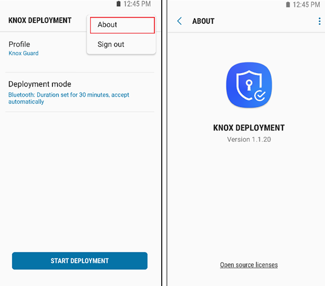
-
Refer to the listed version number and note the version. If needed, select Open source licenses to review the available open source licenses available to your Knox deployment.
Prerequisites
To support Bluetooth or NFC enrollments using the Knox Deployment App, the IT admin must:
-
Secure a Knox Portal account and ensure:
-
Your devices support the Bluetooth or NFC protocols. Check your device specification if unsure.
-
You have at least one profile configured in Knox Guard
-
-
Secure the appropriate licenses to enroll devices (through the Samsung Knox Portal).
-
A Knox Portal account.
-
Install the Knox Deployment on an admin/master device, and login using their Knox Portal ID/password.
-
Select a profile on the master device to apply to the end-user devices.
Using the Knox Deployment App
This section describes the screen flow navigation for a typical Bluetooth or NFC based enrollment using the Knox Deployment App.
-
Select SIGN IN once the Knox Deployment App launches on the device.
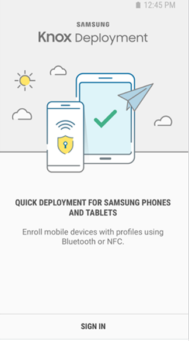
Note
If the Knox Deployment App is already running on the device, the initial screen does not display, and the application displays the sign in screen.
-
Enter the Knox Portal Username and Password to sign in to the Knox Deployment App.
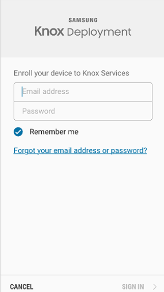
-
Select Remember me to display and utilize the username in subsequent Knox Deployment App logins.
Note
If you encounter difficulty logging in to the Knox Deployment App, ensure you have either a valid Knox Portal account with privileges for Knox Guard. If that is not the issue, select Forgot your email or password? for assistance retrieving your login credentials.
-
Select SIGN IN to proceed with the device login.
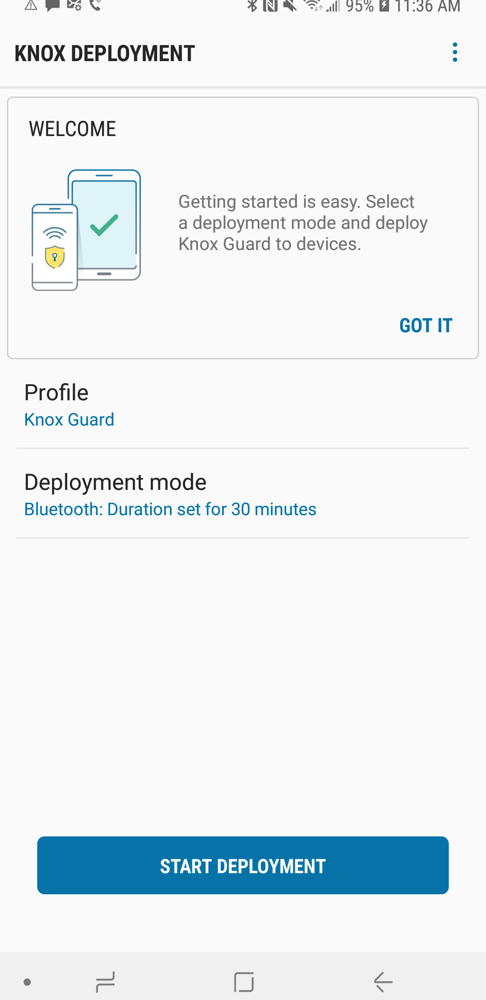
Once you have successfully signed in to the Knox Deployment App, a WELCOME screen displays providing first-time options for profile selection and deployment mode.
Note
Once the Knox Deployment App profile selection and configuration mode are set, the selected options display within their respective fields, the START DEPLOYMENT option enables, and the Welcome portion of screen no longer displays in subsequent logins.
Profile selection
Select a profile to utilize within the Knox Deployment App to apply specific device settings to the master admin device using Bluetooth or NFC to enroll end user devices.
To select a configuration profile using the Knox Deployment App:
-
Select Tap here to select a profile from the Welcome screen display a list of profile selection options.
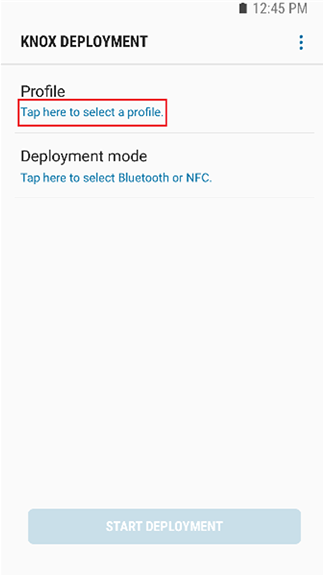
-
Optionally filter whether All profiles are listed for potential selection. The most recent profile additions display first within their respective categories.
-
Each listed profile has a brief description to help determine its relevance to a potential Bluetooth device enrollment using the Knox Development App. An important distinction to the profile description is the profile’s relevance to either phones and tablets or wearable devices.
-
If needed, select the Search icon near the top of the screen to display a search field where existing profiles can be located and displayed. The search function only locates filtered profiles.
-
If no profiles are available, a profile requires registration at SamsungKnox.com.
-
-
Select a listed profile. Once selected, the profile displays upon subsequent logins. The profile is now ready for Bluetooth or NFC deployment mode selection as described in the sections that follow.
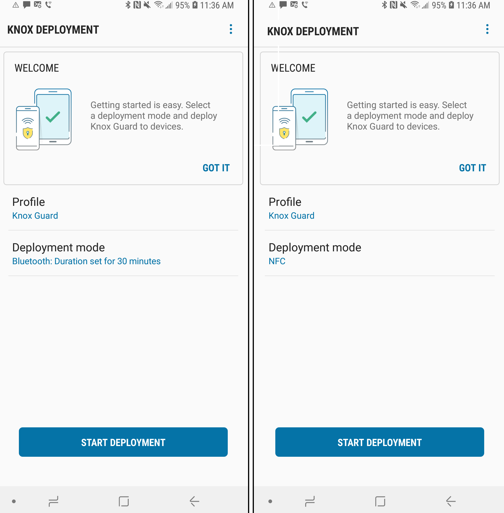
Bluetooth Deployment
Once profiles are set on the master admin device, the IT admin needs to set Bluetooth as the deployment mode and define the Bluetooth duration interval. End users can then enroll their device by entering the appropriate URL.
To deploy devices using the KDA:
-
From the admin master device, navigate to the SELECT DEPLOYMENT MODE screen and select Bluetooth as the device deployment mode.
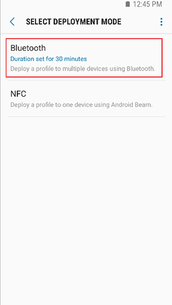
-
Set the Bluetooth Duration for either 30 minutes, 1 hour, 3 hours, 5 hours or 8 hours. Select OK to save the update.
- The Bluetooth duration is deployment activation period for end user devices receiving their profile configuration from the IT admin’s master device. Once the set duration expires, devices cannot enroll with the Knox Deployment App, and the process must be repeated to continue the enrollment of other required devices.
-
From the Knox Deployment screen, the admin selects START DEPLOYMENT to initiate the defined Bluetooth Duration interval.
Note
As long as the defined Bluetooth Duration interval is still counting down, and user has not put the application in the background, the device’s display will not time out.
Note
Bluetooth must be turned on and running on the device to start deployment. If Bluetooth is off, a prompt displays and the admin must select TURN ON to enable Bluetooth.
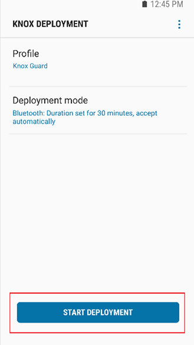
-
The device’s end user must go to https://me.samsungknox.com and complete the instructions provided.
-
The end user then selects FINISH DEPLOYMENT to complete the enrollment.
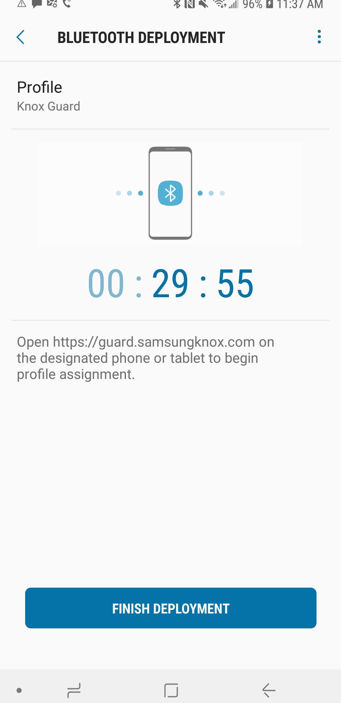
Once completed, the Bluetooth enrolled device displays within Knox Guard. If necessary, refer to the device’s About screen for Knox Deployment App version information and open source license availability.
NFC Deployment
Once profiles are set on the master admin device, the IT admin sets NFC as the deployment mode.
To deploy devices using the KDA:
-
From the admin master device, navigate to the SELECT DEPLOYMENT MODE screen and select NFC as the device deployment mode.
Note
To deploy, both NFC and Android Beam must be on within the device’s Settings menu.
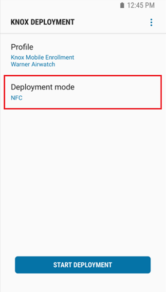
-
Beam enrollment information to the receiving device by holding the admin/master device back-to-back with an NFC enabled and compatible device and then pressing the screen as illustrated below.
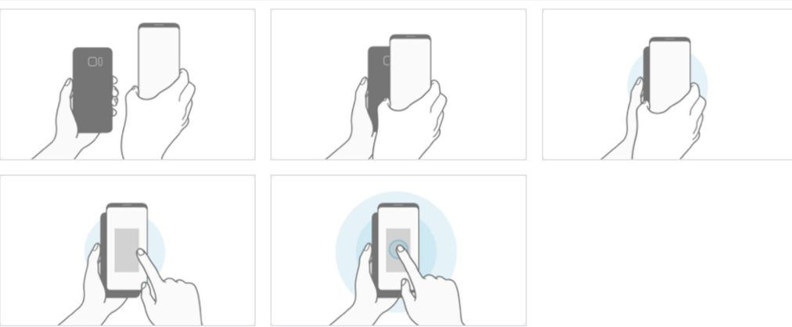
-
Select FINISH DEPLOYMENT on master/admin device once the NFC beam is completed with the end user device.
Note
Once completed, the NFC enrolled device displays within Knox Guard. If necessary, refer to the device’s About screen for Knox Deployment App version information and open source license availability.
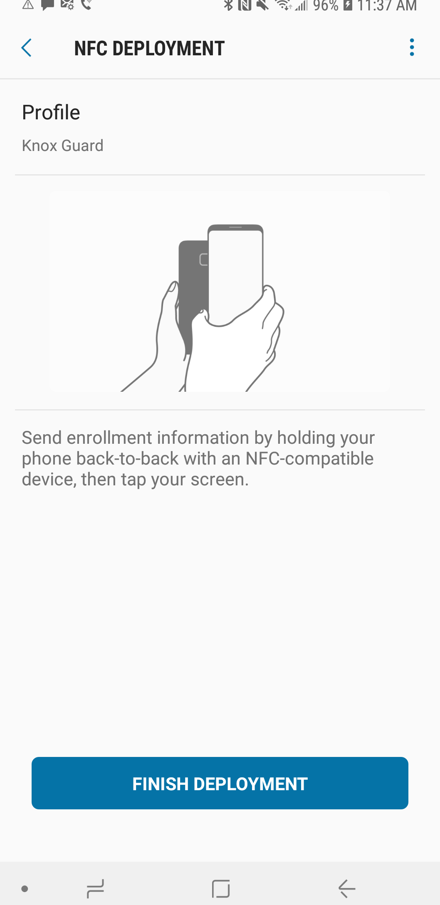
Is this page helpful?